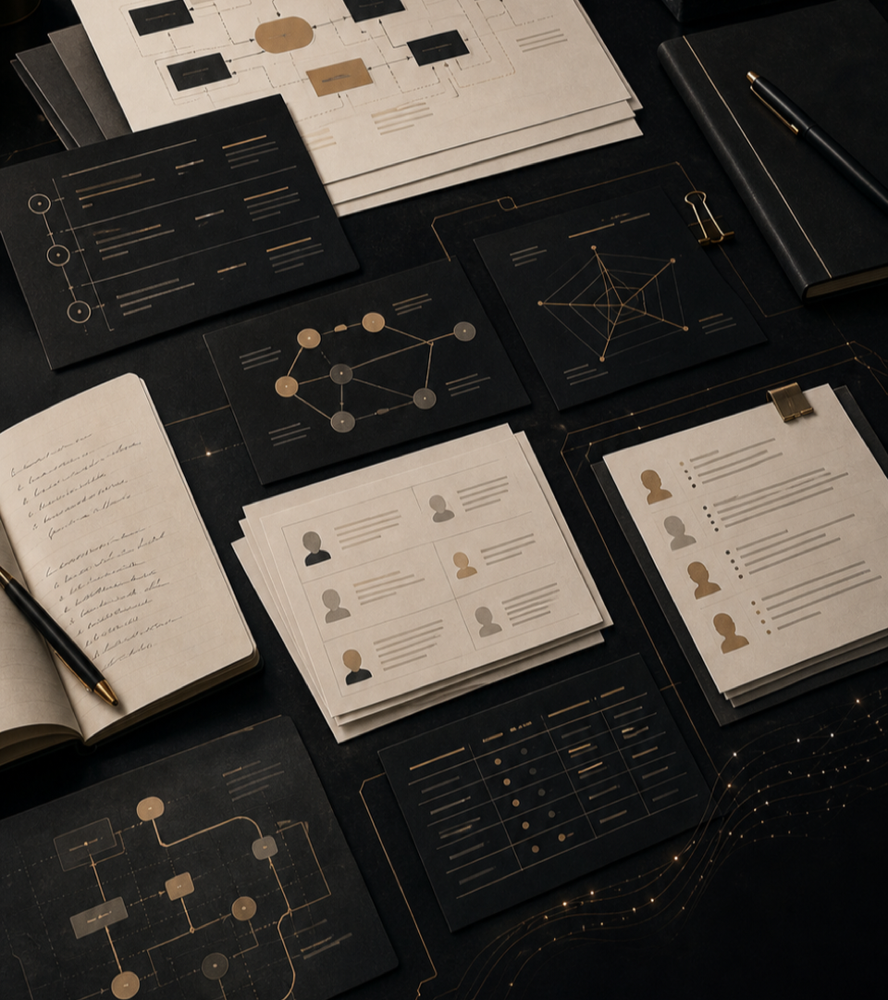
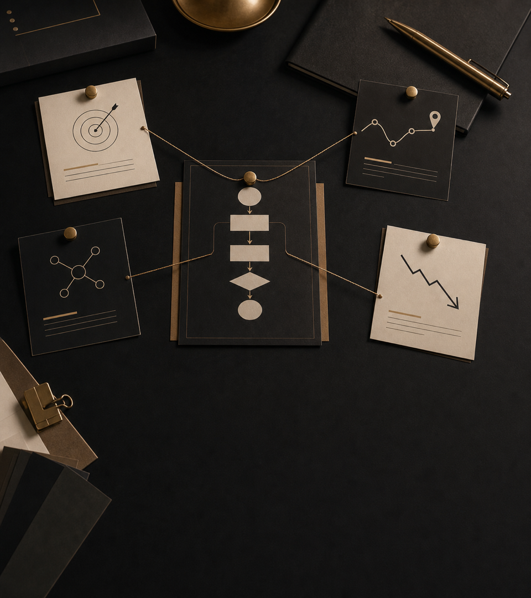
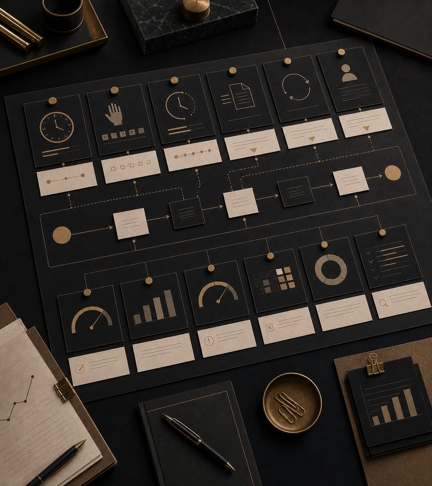

1. Что такое диагностика и зачем она нужна
- 1.1. Зачем нужна диагностика
- 1.2. По какому принципу мы выбираем процессы
- 1.3. Как мы будем говорить об эффекте
- 1.4. Ограничения диагностики
Какие карты, разборы, оценки и рекомендации
Получает компания после диагностики.

Сначала фиксируем смысл диагностики: что она помогает увидеть и где проходят границы результата.
Обычно диагностика состоит из серии интервью, небольшого обучающего блока и короткой стратегической сессии.
Помогают увидеть, как работа устроена в реальности: где возникают задержки, ручные действия, потери информации и зависимость от отдельных людей
Нужен, чтобы у участников появился общий язык для разговора об автоматизации и стало понятнее, что вообще имеет смысл обсуждать как AI-сценарий
Собирает наблюдения в решение: с чего начинать, что готовить заранее и какие процессы лучше не трогать сейчас
Формат встреч может меняться под размер компании и доступность участников. Главный ориентир - результат: у компании должна появиться понятная карта, с чего начинать и почему.
Пять критериев выбора процесса для углубленного изучения
Процесс создает потери, задержки, ошибки, зависимость от людей, потерю контроля или раздражение клиентов / сотрудников
Процесс происходит регулярно; это не редкое исключение
По процессу остается рабочая информация: заявки, письма, сообщения, документы, статусы, таблицы, карточки клиентов, записи встреч
Есть человек, который отвечает за процесс и может принять изменение
Можно понять, что стало лучше: быстрее, дешевле, точнее, прозрачнее, стабильнее
Автоматизация редко будет первым решением
Он будет низким приоритетом
Сначала нужно понять, как фиксировать рабочую информацию
Процесс является идеальным кандидатом для автоматизации
После короткой диагностики обычно нельзя честно посчитать точный финансовый эффект.
Поэтому в отчете выводы раскладываются по уровню уверенности.
На этом этапе компания получает карту текущей ситуации, выбор процессов для первого шага, оценку готовности и рекомендации по дальнейшей работе.
Из каких карт, разборов, таблиц и рекомендаций будет состоять итоговый документ.
В начале отчета будет управленческое резюме на несколько страниц.
Его задача - быстро показать, что стало понятно после диагностики и какое решение теперь можно обсуждать.
Это короткий ответ для лиц, принимающих решения: с чего начинать автоматизацию, почему именно там, какие риски видны уже сейчас и что нужно подготовить перед проектом автоматизации.
На выходе у компании будет простая карта пути и список точек, где возникают основные разрывы. Так становится видно, какие процессы связаны с клиентским или проектным результатом, а какие являются внутренними вспомогательными действиями.
Человек впервые узнает о компании: из рекламы, рекомендации, контента, мероприятия или поиска, а затем оставляет заявку, пишет, звонит или формулирует первичный запрос
Команда уточняет задачу, контекст, ограничения и критерии решения
Компания готовит предложение, обсуждает условия, сроки, состав работ и ответственность
Стороны фиксируют договоренности, документы, оплату и стартовые данные
Команда ведет работу, передает статусы, согласует промежуточные результаты и закрывает вопросы
Результат передается клиенту, закрываются документы, обязательства и внутренние статусы
Компания собирает обратную связь, рекомендации, повторные обращения или реферальные возможности
Карта процессов переводит путь клиента или проекта в список конкретных рабочих процессов, которые можно сравнивать между собой.
На этом этапе видно, какие процессы связаны с клиентским или проектным результатом, где возникают разрывы и что выглядит кандидатом на автоматизацию. Дальше отчет разбирает выбранные процессы глубже: как они устроены, где ломаются и что нужно подготовить перед проектом автоматизации.
2-3 выбранных процесса разбираются по одинаковой логике, чтобы их можно было сравнивать между собой, а не обсуждать каждый отдельно и на ощущениях.
Для каждого процесса нужно ответить на четыре вопроса:

На схеме нужно показать не только текущие шаги, но и места, где работа начинает ломаться.
Мы отдельно покажем, какая информация остается после прохождения процесса и где она хранится.
В отчете будет карта людей и ролей вокруг процесса.
По каждому выбранному процессу мы покажем, какие показатели можно использовать для проверки следующего шага.

В конце каждого подробного разбора будет короткое решение.
В отчете будет отдельный раздел про то, где в компании фактически живет рабочая информация.
Не всякая проблема и не всякая задача требует автоматизации.
После разбора процессов и рабочей информации в отчете будет собрана карта возможных улучшений.
Уточнить этапы, роли, ответственность, правила передачи работы и согласования
Договориться, где фиксируются статусы, документы, карточки клиентов, задачи и актуальная информация
Снизить ручной труд при фиксации договоренностей, задач, статусов и результатов встреч
Забирать данные из переписок, документов, звонков или встреч и переносить их в рабочие системы
Готовить черновики документов, краткие сводки, напоминания, списки задач и подсветку рисков
Показать зависшие задачи, просроченные обязательства, спорные статусы и места, где требуется решение
По каждому выбранному процессу мы дадим
оценку готовности по пяти критериям.
Есть ли проблема, которую действительно важно решить
Происходит ли процесс достаточно часто
Остается ли по процессу рабочая информация
Есть ли человек, который может принять изменение
Можно ли понять, что стало лучше
Мы отдельно покажем, насколько уверенно можно говорить об эффекте по каждому процессу.
Такой формат позволяет обсуждать эффект аккуратно: с понятной границей между
подтвержденными наблюдениями, предварительными оценками и тем, что нужно измерять на следующем этапе.
Подтверждено интервью, документами или демонстрацией процесса
Сотрудники вручную переносят данные из переписки в систему учета клиентов
Можно примерно оценить по времени, частоте, числу людей или объему операций
На это уходит примерно 30-40 минут в день у нескольких человек
Выглядит вероятным, но требует проверки
Автоматическое извлечение договоренностей может снизить число забытых задач
Пока не хватает данных для оценки
Точный экономический эффект нужно измерять на следующем этапе
В конце отчет должен не просто описать ситуацию, а ответить на вопрос: что делать после диагностики.
По итогам отчета должно остаться практическое решение: какой процесс брать, на каких условиях и что должно подтвердиться дальше. Иначе диагностика превращается в описание проблем без управленческого следующего шага.
По итогам диагностики вы получите документ, который можно использовать для управленческого обсуждения и решения о следующем этапе.
В итоговом документе вы найдете:
После отчета у компании появляется понятная картина: какие процессы "болят", где они повторяются, где живет информация, какие роли должны быть закрыты, что можно измерить и с какого участка разумнее начинать.